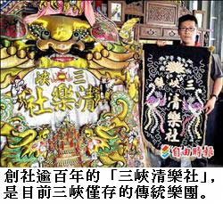

日治盛事 三峽憶往
在地樂團於舢舨建華麗船樓 拚財富也比才藝
謝佳君｜自由時報／新北都會生活∣2013年6月12日
端午節除了划龍舟、包粽子或立蛋，聽過三峽「彩舫競技」嗎？
新北市三峽區在日治時期過端午節，還有「彩舫競技」。三峽區秀川里長李楷瑞說，民國九年至廿六年，每逢端午節，當時三峽兩大樂團「清樂社」和「同樂團」就會競技。
「彩舫競技」是在拼接而成的舢舨上搭建船樓，並將船樓彩繪，且為了避免彩舫在岸邊被河水沖走、損壞，會綁在碼頭邊，彩舫隨著水流高低起伏，樂團和戲班就在各自的彩舫上演戲、奏樂。
李楷瑞表示，這些船樓相當華麗，已故知名藝術家李梅樹曾為「清樂社」彩繪船樓，他記得船樓有三層樓高，李梅樹畫了兩隻趴臥著的老虎，還被同社的人戲稱為「貓仔賜福」；那一年，「同樂團」的船樓雖然僅一層，裝飾卻相當華麗，讓人讚嘆。
除了精緻的船樓，兩個樂團在彩舫上演戲及演奏樂器較勁，由於舢舨在河面上漂動，增加表演的難度，雙方你來我往，觀眾也樂得聆賞一齣齣好戲和樂曲，熱鬧無比，持續到天黑。
端午過後，這些彩舫任其留在河邊，直到七、八月颱風來時被吹倒，隔年再造新彩舫。
李楷瑞說，農曆五月初五端午節，加上農曆五月初六祖師爺成道紀念日，三峽民眾會聚集在祖師廟一帶，因此，當時樂團選在這個時節舉辦彩舫競技，不僅提供百姓休閒娛樂，也有樂團比拚財力的意味。
但到了民國廿六年，日本殖民政府推動皇民化運動，禁止類似迎神賽會，樂團活動式微，「同樂團」在民國六十年代解散，獨剩「清樂社」，昔日盛況已不復見。
百年清樂社 傳承民俗文化
「三峽清樂社」創社逾百年，是目前新北市三峽區僅存的傳統樂團，在北台灣也不多見；在迎神賽會或遊行慶典看見他們的身影，傳統民俗得以一脈相傳。
清樂社社員李楷瑞表示，三峽清樂社原名「三角湧清樂軒」，創於一九○八年，初期是農村地方自娛的小型樂社；一九二一年（民國十年），三角湧改名為三峽，社名也跟著改為「三峽清樂社」，日益壯大，廣募「社員」和「藝員」。
其中，社員是以地方仕紳為主，出資出力，並參與西秦王爺（演藝界祖師爺）祭祀，包括已故藝術家李梅樹、名醫劉清港及劉鉅篆等，皆曾為社員；藝員則參與祭祀，也學習技藝，並成立子弟團做為迎神賽會陣頭。
現在常見的陣頭配樂以鼓、鈸、鑼為主，清樂社還多了嗩吶，李楷瑞說，清樂社在更名後相當活躍，除了迎神賽會，還曾參與台灣第一部彩色電影《冬暖》的演出。
李楷瑞指出，樂團的成立除了有娛樂效果，還有維繫人際情感作用，而且在當時彰泉械鬥頻繁年代，還有助化解悲憤之氣。
民國廿六年實施皇民化運動後，禁止迎神賽會相關活動，清樂社一度沉寂，即使台灣光復後曾經復興，卻在六十年代隨著電視、電影等多元娛樂形式出現，又再沒落。
近年來不敵老臣凋零、新生代人才短缺的現實困境，青黃不接下，樂社再趨式微，從鼎盛時期有兩百多名社員，到現在只剩一百多人，但仍盼有活血注入，讓傳統樂社在新世代繼續屹立長存。